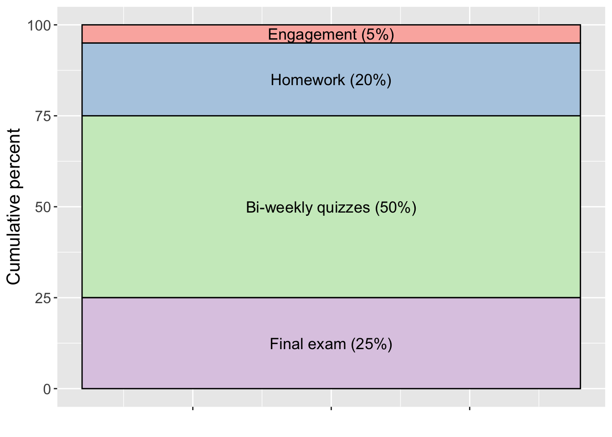

See our course calendar for material covered each week. Click the Github icon in the top right of the navigation bar on this page to access the course content repository, which includes .Rmd and pdf files of scaffolded notes, homework assignments, and R examples.
MWF 11:00-11:50am
Wilson Hall 1-124
Dr. Stacey Hancock
email: stacey.hancock@montana.edu
Office: Wilson 2-195
Phone: (406) 993-5350
Office hours:
STAT 422 or consent of instructor. If you do not feel you meet the prerequisites for this course, please speak to the instructor as soon as possible to determine if STAT 421 would be a better option.
The required textbook for the course (and one that you’ll want to save for the rest of your career!) is Statistical Inference, 2nd edition by Casella and Berger, 2002.
We will be using the statistical software R through the IDE RStudio for simulations, data visualization, and statistical analyses. Students have four options for accessing this free software:
Download to your own laptop. (Note R and RStudio will not run on iPad, notebooks, or Chromebooks. If you have one of these devices, see the cloud-based option below.)
Use RStudio through the Posit Cloud. This resource allows you to use RStudio through a web browser. It is free for use, but it does limit you to a certain number of project hours per month.
Use RStudio through an MSU virtual machine.
Use RStudio in an MSU on-campus computer lab.
This course will prepare you for future coursework in statistics. In addition to learning distribution theory, you will learn to think and reason statistically. My role, as the instructor, is to facilitate this type of learning by providing you with a variety of meaningful activities and opportunities to learn, as well as by creating an environment conducive for learning. This will manifest in a variety of ways: group work, direct instruction, individual practice, exploration and discovery activities, writing, discussions and/or student-led instruction. The course is structured for understanding, as opposed to mere memorization. Ultimately, you are responsible for your own learning, so please put into the class what you hope to get out of it.
At the end of the course, students will understand:
In this course, you are expected to have professional behavior. You are expected to attend all class meetings on time, be curious, ask questions, seek opportunities to learn, and be open and responsive to constructive feedback. In addition:
You are also expected to exhibit a professional demeanor (language, attitude) toward others. Disagreement during discussions is welcome and often productive in developing a deeper understanding of the concepts being discussed. However, disagreement in a discussion does not warrant yelling or disrespectful language or behavior. Unprofessional behavior that impedes on other students’ opportunity to learn will not be tolerated, and appropriate actions will be taken to prevent future occurrences. Anyone causing minor disturbances (e.g., cell phone usage or ringing) will be expected to bring treats for everyone else to the next class meeting.
Your grade in M/STAT 501 will contain the following components.

Engagement (5%): Each week will include an “engagement” grade for the course (pass/fail). In order to earn engagement credit, you must either visit office hours or post on our Canvas Discussion boards that week. (For the first week only, the engagement credit consists of filling out the welcome survey in Canvas.) Excessive class absences (without communication with the instructor) will decrease this portion of your grade.
Homework (20%): The only way to learn probability and statistics is to practice working problems, and homework is therefore an essential part of the course. Homeworks will be assigned bi-weekly, alternating weeks with quizzes. Access the homework assignment and turn in the assignment via Gradescope.
Letter grades generally follow the typical scale:
93-100 = A
90-92 = A-
88-89 = B+
83-87 = B
80-82 = B-
etc.
These cutoffs may be adjusted down (never up!) at the end of the semester, depending on the grade distribution in the course. Thus, a 93% will guarantee an A, a 90% will guarantee an A-, etc.
Respect for Diversity: It is our intent that students from all diverse backgrounds and perspectives be well-served by this course, that students’ learning needs be addressed both in and out of class, and that the diversity that students bring to this class be viewed as a resource, strength and benefit. It is our intent to present materials and activities that are respectful of diversity: gender identity, sexual orientation, disability, age, socioeconomic status, ethnicity, race, religion, culture, perspective, and other background characteristics. Your suggestions about how to improve the value of diversity in this course are encouraged and appreciated. Please let us know ways to improve the effectiveness of the course for you personally or for other students or student groups.
In addition, in scheduling exams, we have attempted to avoid conflicts with major religious holidays. If, however, we have inadvertently scheduled an exam or major deadline that creates a conflict with your religious observances, please let us know as soon as possible so that we can make other arrangements.
Support for Inclusivity: We support an inclusive learning environment where diversity and individual differences are understood, respected, appreciated, and recognized as a source of strength. We expect that students, faculty, administrators and staff at MSU will respect differences and demonstrate diligence in understanding how other peoples’ perspectives, behaviors, and worldviews may be different from their own.
This class will strive to create an environment that fosters learning, critical thinking, and effective communication. To achieve these goals, I have decided to prohibit the use of ChatGPT or similar tools during this course, with the exception of assistance in writing computer code.
While ChatGPT and other language models can be powerful and useful tools in certain contexts, I believe that relying on them for this course undermines the learning objectives. I want you to develop your skills in independent thinking, problem-solving, and engagement with the subject matter. By restricting the use of AI language models to help with coding only, you will utilize your knowledge, creativity, and critical analysis to complete your assignments and actively participate in class discussions.
I understand that technology plays an increasingly prominent role in various aspects of our lives, and I acknowledge its potential benefits. However, in the context of this course, I believe that relying on personal effort and intellectual exploration will enhance your learning experience and contribute to your long-term development as a knowledgeable and well-rounded individual.
It is important to note that this requirement applies to all aspects of the course, including assignments, exams, and any form of communication related to the course content. Any use of AI language models, including ChatGPT, during these activities, outside of appropriate use to aid in computer coding, will be considered a violation of the student code of conduct.
Should you have any questions or concerns regarding this course expectation, please feel free to discuss them with me. I am here to support and guide you throughout this educational journey.
The wording above was adapted from MSU’s guidance on establishing expectations, syllabus language, and policies for generative AI use.
In M/STAT 501, at a minimum, any act of academic dishonesty, which includes but is not limited to plagiarism, cheating, multiple submissions, or facilitating others’ misconduct, will result in a score of zero on the assignment/quiz/exam in question and notification of department and university officials. Further action may be taken as warranted. If you have any questions about the limits of collaboration or about using and citing sources, you are expected to ask for clarification.
After attempting to complete homework problems on your own, you are permitted to collaborate on homework in a constructive manner for all involved—each individual in the collaboration needs to ensure they understand and could explain the process of solving each problem. While I encourage you to talk through problems with fellow students, the work you turn in must be your own and must be written in your own words (unless the assignment specifically states otherwise).
Each homework will require a “citations” page where you cite all sources (including web forums such as Stack Overflow, Google searches, and AI (for coding questions only)) and individuals used to complete that homework assignment. Paraphrasing or quoting another’s work without citing the source is a form of academic dishonesty. Even inadvertent or unintentional misuse or appropriation of another’s work (such as relying heavily on source material that is not expressly acknowledged) is considered plagiarism. Homework assignments that do not cite sources or individuals, or assignments where answers are copied directly from another student, will be considered and treated as plagiarism, and will receive a zero grade. If you have any questions about the limits of collaboration or about using and citing sources, you are expected to ask for clarification.
Quizzes and final exam in this course will be closed notes and closed book and must be completed individually. The same sheet of distributions provided during the MS Statistics comprehensive exams will be provided for use during the final exam, and portions of it when needed during quizzes.
Students in an academic setting are responsible for approaching all assignments with rigor, integrity, and in compliance with the University Code of Student Conduct. This responsibility includes:
More information about Student Conduct from the Dean of Students